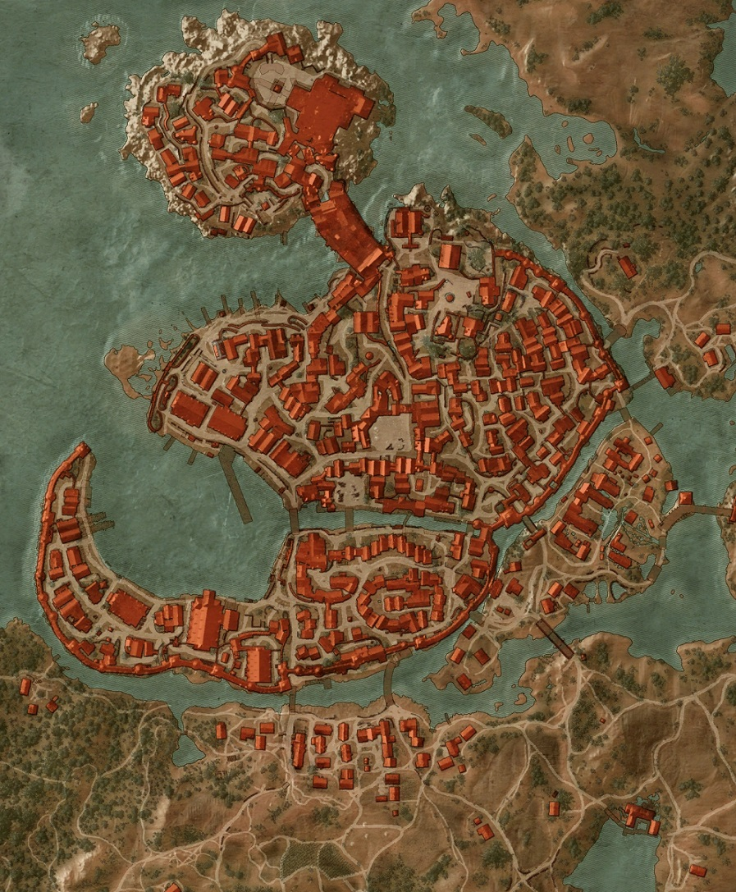

Ohně novigradu - Geralt dorazí do Novigradu, kde se po zásahu proti zlodějům setká s Triss ukrývající se před lovci čarodějnic. Společně pak pomohou místnímu bylinkáři a odhalí stopu vedoucí k věštkyni Corinne.
Snění v Novigradu - Geralt navštíví strašidelný dům, kde najde snovalku Corinne Tillyovou uvězněnou v noční můře způsobené malým poťouchlým bleskavcem. Poté, co zaklínač situaci vyřeší, mu osvobozená věštkyně v tranzu vyjeví vizi propojující Ciri s básníkem Marigoldem.
Poklad hraběte Reuvena - Geralt pomáhá špiónovi Dijkstrovi vyšetřit rafinovanou krádež jeho obrovského majetku, který zmizel z tajného podzemního trezoru. Pátrání zavede zaklínače a Triss až do centrály lovců čarodějnic, kde musí Geralt učinit těžké rozhodnutí, zda nechat Triss mučit výměnou za cenné informace.